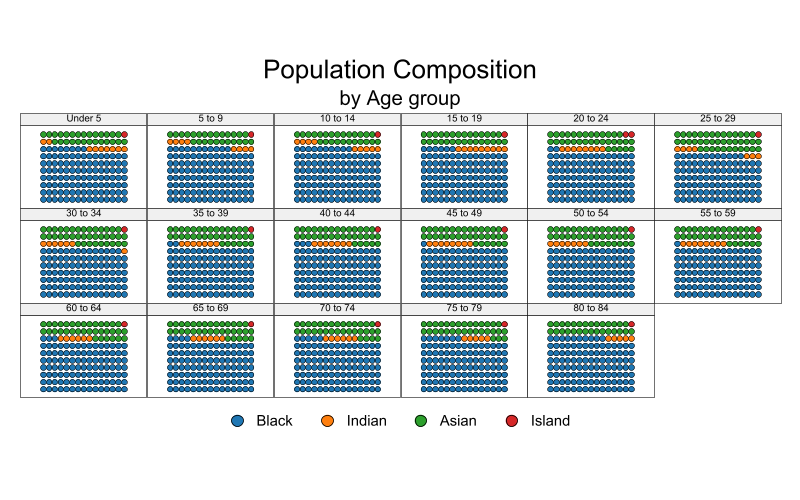

set scheme white2
color_style tableau
waffle_plot 35 How to make Waffles: waffle_plot
Alternative to Pies
Disclaimer
Let me start by stating that what I am about to present is not the only way. It is simply the approach I prefer, particularly after some flexing some programming mussiles, and when I wish to avoid repetitive typing.
Having said that, I want to acknowledge that step-by-step guides on this type of plots can be found elsewhere. They can be quite beneficial, particularly if the command I am presenting does not meet your needs.
Learning how to create these plots step-by-step provides greater flexibility, but I believe that using the waffle_plot (available from SSC and fra) is versatile enough for most purposes.
So, without further ado, let’s get started.
What is a waffle plot?
A waffle plot is a type of chart similar to a pie chart (how interesting we like to name them as foods), because they can be used to visualize sample compositions.
The key difference between a waffle plot and a pie chart is the way the information is displayed. Whereas a pie chart depicts the composition as pieces of a circle, a waffle plot represents it as dots in a box. Interestingly, the dots in a waffle plot resemble a waffle, hence the name.
But what are they, really?
If you want an insider look of a waffle plot, they are nothing else than a scatter plot within a box. The points are spaced out evenly both horizontally and vertically, which makes it a bit harder to display detailed information. For example in a 10x10 scatterplot, you cannot differentiate between 13.6 and 13.7.
Making waffle plots isn’t too tricky, but they can take a bit of time. Thus, I decided to write a small ado that makes creating these type of plots easily.
In what follows, I will show you how to use waffle_plot to make this type of plots in Stata!. But first, I would suggest you to get the following two packages from ssc (or fra):
ssc install waffle_plot
ssc install color_styleMaking Waffles
Simple waffle plot
Say that you want to do a waffle plot, and want to show that 35% of individuals do something. If so, you will type:
When used like this, waffle_plot acts like an immediate command. You just feed it data, and it makes the waffle.
However, as you can see on above, the simple waffle is not very attractive. So lets try improve on it.
Beautify
You can change the size and symbol. However, you need transfer that information using sctopt (scatter options). Although, if the options are related to the marker options, you can add them directly to command line.
waffle_plot 35, msize(6) /// Increase size of Dots
msymbol(square) /// and change them to Squares
legend(order(1 "The blues" 2 "The rest")) /// ads Labels
title("First nice? Waffle")Of course, if your goal is to show the distribution for more than just 1 group, you can add more numbers to the command. However, the command will only recognize new numbers as long as the total is below 100. If the total is below 100, the last group is considered the “rest”, and colors for that group is assigned using option color0. If the total is above 100, the last values will be ignored, unless you use the option total[(number)]. To either rescale it based on the information given, or providing a “Total” for rescaling.
waffle_plot 12 45 7, /// lets use 3 groups
sctopt(msize(6) msymbol(square)) /// with some sct options
color0(gs10) /// adding color to the "rest" category
color(blue red) /// and to the other two
legend(order(1 "Democrats" 2 "Republicans" 3 "Green Party"))Something else I added to the command was the ability of chaning the dimensions of the BOX. By default, your waffle is a 10x10 matrix. this can be changed using xnobs() and ynobs().
waffle_plot 12 45 7, /// Uses numbers between 0-1.
msize(6) msymbol(square) mlcolor(black) /// Other SCT options
color0(gs10) color(blue red green) /// Color for rest and each group
legend(order(1 "Rep" 2 "dem" 3 "green" 4 "Undecided")) xnobs(12) ynobs(8)Further use: Beyond immediate
The previous section shows how to produce waffle plots providing the data you want to plot. But what if you want to use your own data set. You can certainly estimate the numbers yourself, and then make the plot, but it may be convinient using data from a stored dataset.
Doing that would even allow you to create multiple plots using by(). I provide some examples next mix and matching many options.
set graph off
sysuse pop2000, clear
waffle_plot black indian asian island, /// provides 3 variables with Pop for each
legend(order(1 "Black" 2 "Indian" 3 "Asian" 4 "Island") cols(4)) ///
msize(3) mlcolor(black) /// Scatter options
total /// This is different. Im asking to construct shares internally
by(agegrp, title("Population Composition") /// Using by(), Notice (sub)Title
compact subtitle("by Age group") note("") cols(6)) /// and Cols
xnobs(15) // Just Because I want to show a rectangle
graph export sv10.png, height(500) width(800) replace
This first one uses data directly from the cesus, to plot the proportion of Blacks, indian, asiand, and islanders by age group in the US. I excluded white population on purpose, so i want the numbers create the shares based on this 5 groups only.
sysuse cancer, clear
waffle_plot died, ///
color0(gs15) /// Color for the left out
legend(off) /// Legend
by(drug, cols(3)) msize(3) ///
title("Share of people who died by Drug type") ///
flip nobs(15) // two new things. FLIP and increase to 15x15 s
graph export sv11.png, height(500) width(800) replaceThis one plots the share of people who died based on access to a particular drug. It uses nobs() to allow for more Dots, and flip, for a different way of presenting the information.
sysuse voter, clear
xi, noomit:waffle_plot i.cand [w=pop], /// Notice weights, and "factor"
color(cranberry*0.7 navy*0.7 forest_green*.5) /// Special colors
msize(4) mlcolor(black%50) ///
by(inc, title("1992 President Elections") subtitle("by Family Income")) ///
legend(order(1 "Clinton" 2 "Bush" 3 "Perot") cols(3))
graph export sv12.png, height(500) replaceThis last one shows you can use the option “factor”, you can also use weights, and make use of special colors selection.
Conclusions
Because waffle_plot is just a collection of scatter plots, you can use most twoway graph options with this command. Although I have not tried all of them. So handle with care.
In any case, this command does the heavy lifting, you can do the fineness.
Til next time